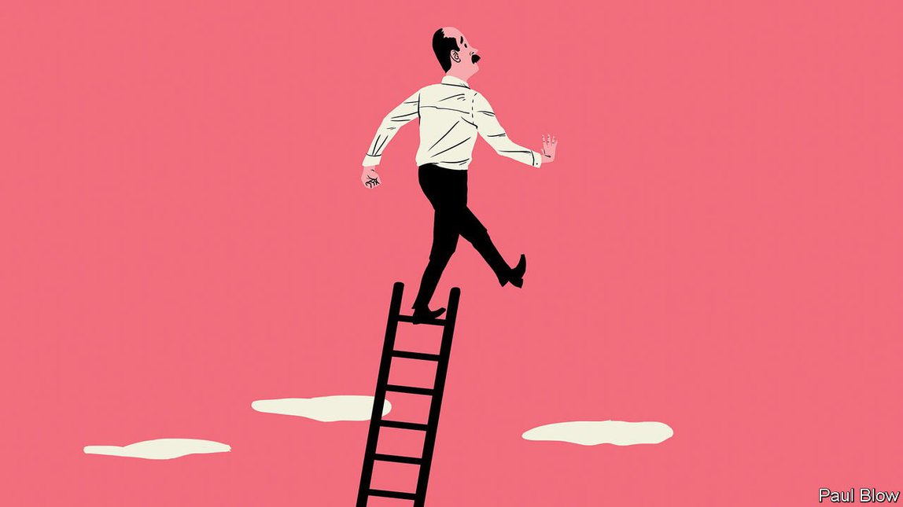

2021-05-07T11:31:35+00:00
巴托比
卸任高管后的生活
调整的过程可能会很痛苦
即使最辉煌的职业生涯某天也会走到头。选择合适的退休时机就够难了，许多人更是琢磨不出自己接下来还可以做些什么。前猎头简·霍尔（Jan Hall）和心理学家乔恩·斯托克斯（Jon Stokes）在新书《换档》（Changing Gear）中探讨了人们在结束了童年和职业生涯后迈入人生“第三阶段”时可以遵循怎样的策略。
正如两位作者所指出的，到了第三阶段，个人就要重新定义自己在社区中的角色。对于那些长期身居高位的人来说，这个过程可能尤其困难。他们必须接受自己地位丧失的事实，并意识到自己不仅是可替代的，而且终有一死。就业给予人们的远不只是收入：它让人把日子安排得井井有条，有机会建立新的友谊，从参与某项共同的事业中获得一种使命感。
那些已经爬到塔尖的人经常忽视生活中的其他方面——事实上，若非如此，他们可能也不会爬到那么高。对于这样的人来说，退休可能非常像悲伤的五个阶段：否认、愤怒、讨价还价、沮丧和接受。否认这一点尤为显著。正如霍尔和斯托克斯观察到的，“位高权重的人渐渐脱离了现实”，并且“自视过高”。高管们可能意识不到自己已与新的市场动向脱节，或者因为行事倨傲而和员工渐行渐远。当其他人建议他们该卸任了，他们可能会把这理解为一种背叛而感到恼怒。
有权有势的人退休后可能也很难规划自己的未来。他们还没退休时可能也没时间考虑如果不工作的话还能做什么。离开工作岗位后，他们的表现可能有点像瘾君子猛然戒断时的反应。霍尔和斯托克斯指出，“退休”这个词让人联想到被动和退缩的意味，让许多人避之不及。个体选择领导的角色可能是因为他们喜欢高高在上和呼风唤雨的感觉。转向非管理层角色或者给慈善机构做志愿者似乎不是个合适的替代方案。他们还是想管点儿什么。
家庭生活也不一定会顺遂。配偶和子女往往已习惯了另一半和父母一方因长时间工作而在生活中缺席。他们已建立起了自己的朋友和活动圈子。家里突然多了一个百无聊赖的退休人士来回晃荡，他们可能还会不适应。除此之外，那些身居要职的人自己可能也很难发展出亲密的友谊，特别是在工作中。
这本书展示了一系列案例，主角就是那些经历过这种重大转变的人，其中有些人调适得明显比其他人好。也许免不了的是，他们会发出一些故作高深的絮叨。但是，读者们若能把那些个“转型思维”和“期望潜力”的段落忍过去，就会发现这些个人故事很有启发性，作者提出的问题也很重要。临近退休的人必须弄清楚自己曾经是谁、现在是谁，今后又想成为谁。
答案会因人而异，并没有“放之四海而皆准”的解答。笔者的父亲从校长的职位上退休后感到从未有过的快乐，因为他有时间阅读、做园艺和听莫扎特了。换做别人，这样的生活也许会让他们无聊到犯困。作者建议人们要乐于实验、尝试新活动、开发新技能，找经历过相同过程的人聊聊。还有一种方法是写日记，把自己喜欢做或曾经希望做的事情列个单子。
此外，那些行将退休的人应该考虑自己想扮演什么类型的角色。是喜欢和别人一起工作，还是单干？自己主要是从哪里获得满足感？是发掘创意，还是协调团队？自我认知不是一项容易掌握的技能，因此，人们应该跟一些可信赖的人谈谈，以了解外界对自己的看法。答案可能会出乎他们意料。
这个问题非同小可。想想看，人们花了多少时间决定自己想上哪所大学、学哪门课程、从事哪种职业。决定职业生涯结束后的生活方式同样是件要紧的事，因为今后说不定还有几十年的人生要安享呢。
2021-05-07T11:31:35+00:00
Bartleby
Life after the C-suite
The adjustment process can be painful
THERE COMES a time when even the most glittering career must come to an end. Choosing the right moment to retire is difficult enough, but many people also struggle to imagine what they could possibly do next. In their new book, “Changing Gear”, Jan Hall, a former headhunter, and Jon Stokes, a psychologist, discuss the strategies that people can follow when approaching the “third stage” of life, after their childhood and their careers.
As the authors note, the third stage involves individuals redefining their role in the community. This process may be particularly difficult for those who have been in high-powered jobs. They must come to terms with a loss of their status and the realisation that they are both replaceable and mortal. Employment provides people with a lot more than just an income: it gives a structure to the day, opens up new friendships and provides a purpose that comes from taking part in a shared endeavour.
Those who have reached the top of the tree often neglect the other areas of their life—indeed, they may not have got so high if they didn’t. For such people, retiring may be a lot like the five stages of grief: denial, anger, bargaining, depression and acceptance. Denial is particularly significant. As Ms Hall and Mr Stokes observe, “those in power gradually become insulated from reality” and “develop an inflated sense of their own importance”. Executives may not realise they have grown out of touch with new market developments or so overweening in their behaviour that they are alienating their staff. When others suggest that it is time for them to step down, they may feel angry at the apparent betrayal.
It can also be hard for high-powered people to map out a future after they quit their posts. While they are working, they may have no time to consider alternative activities. Leaving their jobs may be a little like a drug addict going “cold turkey”. The word “retirement” conjures up ideas of passivity and retreat that many find unattractive, Ms Hall and Mr Stokes point out. Individuals may have chosen leadership roles because they like having power over others or sway over events. Shifting into a role as a non-executive, or volunteering for a charity, will not seem like an adequate substitute. They still want to be in charge of something.
Nor will home life necessarily be easy. Spouses and children have often become used to coping without a parent who has worked long hours. They have built their own networks of friends and activities. They may find it hard to adjust to the presence of a bored pensioner knocking about the house. On top of that, it may have been tricky for those in positions of authority to develop close friendships themselves, particularly at work.
The book presents a series of case studies of people who have been through this kind of upheaval, some a lot more successfully than others. There is, inevitably perhaps, a bit of psychobabble. But readers who tolerate talk of “transition mindsets” and “potential desired competences” will discover that the individual stories are instructive and the questions posed by the authors are important. Those near retirement must work out who they have been, who they are now and who they would like to become.
The answers will vary from person to person; there is “no one size fits all” solution. Bartleby’s father was never happier than when, after retiring from his job as a headmaster, he was able to spend his time reading, gardening and listening to Mozart. Other people would be bored to tears by such a life. The authors suggest that people be willing to experiment, to try new activities, develop new skills and talk to others who have been through the same process. Another approach is to keep a journal and make a list of things that you like to do, or have also wished to do.
In addition, those approaching retirement should consider the type of role they like to play. Do they enjoy working with others or working alone? Do they draw satisfaction mainly from developing ideas or from co-ordinating teams? Since self-awareness is a difficult skill, people should talk to a few trusted contacts to discover how they are perceived by the wider world. They may find the answers are surprising.
This is a critical issue. Think of all the time people spend deciding which university they would like to attend, which course they would like to study and which career they would wish to follow. Deciding on their post-career lifestyle is just as important. They may have decades left to enjoy.
2021-05-07T11:31:35+00:00
巴托比
卸任高管後的生活
調整的過程可能會很痛苦
即使最輝煌的職業生涯某天也會走到頭。選擇合適的退休時機就夠難了，許多人更是琢磨不出自己接下來還可以做些什麼。前獵頭簡·霍爾（Jan Hall）和心理學家喬恩·斯托克斯（Jon Stokes）在新書《換檔》（Changing Gear）中探討了人們在結束了童年和職業生涯後邁入人生“第三階段”時可以遵循怎樣的策略。
正如兩位作者所指出的，到了第三階段，個人就要重新定義自己在社區中的角色。對於那些長期身居高位的人來說，這個過程可能尤其困難。他們必須接受自己地位喪失的事實，並意識到自己不僅是可替代的，而且終有一死。就業給予人們的遠不只是收入：它讓人把日子安排得井井有條，有機會建立新的友誼，從參與某項共同的事業中獲得一種使命感。
那些已經爬到塔尖的人經常忽視生活中的其他方面——事實上，若非如此，他們可能也不會爬到那麼高。對於這樣的人來說，退休可能非常像悲傷的五個階段：否認、憤怒、討價還價、沮喪和接受。否認這一點尤為顯著。正如霍爾和斯托克斯觀察到的，“位高權重的人漸漸脫離了現實”，並且“自視過高”。高管們可能意識不到自己已與新的市場動向脫節，或者因為行事倨傲而和員工漸行漸遠。當其他人建議他們該卸任了，他們可能會把這理解為一種背叛而感到惱怒。
有權有勢的人退休後可能也很難規劃自己的未來。他們還沒退休時可能也沒時間考慮如果不工作的話還能做什麼。離開工作崗位後，他們的表現可能有點像癮君子猛然戒斷時的反應。霍爾和斯托克斯指出，“退休”這個詞讓人聯想到被動和退縮的意味，讓許多人避之不及。個體選擇領導的角色可能是因為他們喜歡高高在上和呼風喚雨的感覺。轉向非管理層角色或者給慈善機構做志願者似乎不是個合適的替代方案。他們還是想管點兒什麼。
家庭生活也不一定會順遂。配偶和子女往往已習慣了另一半和父母一方因長時間工作而在生活中缺席。他們已建立起了自己的朋友和活動圈子。家裡突然多了一個百無聊賴的退休人士來回晃蕩，他們可能還會不適應。除此之外，那些身居要職的人自己可能也很難發展出親密的友誼，特別是在工作中。
這本書展示了一系列案例，主角就是那些經歷過這種重大轉變的人，其中有些人調適得明顯比其他人好。也許免不了的是，他們會發出一些故作高深的絮叨。但是，讀者們若能把那些個“轉型思維”和“期望潛力”的段落忍過去，就會發現這些個人故事很有啟發性，作者提出的問題也很重要。臨近退休的人必須弄清楚自己曾經是誰、現在是誰，今後又想成為誰。
答案會因人而異，並沒有“放之四海而皆準”的解答。筆者的父親從校長的職位上退休後感到從未有過的快樂，因為他有時間閱讀、做園藝和聽莫扎特了。換做別人，這樣的生活也許會讓他們無聊到犯困。作者建議人們要樂於實驗、嘗試新活動、開發新技能，找經歷過相同過程的人聊聊。還有一種方法是寫日記，把自己喜歡做或曾經希望做的事情列個單子。
此外，那些行將退休的人應該考慮自己想扮演什麼類型的角色。是喜歡和別人一起工作，還是單幹？自己主要是從哪裡獲得滿足感？是發掘創意，還是協調團隊？自我認知不是一項容易掌握的技能，因此，人們應該跟一些可信賴的人談談，以了解外界對自己的看法。答案可能會出乎他們意料。
這個問題非同小可。想想看，人們花了多少時間決定自己想上哪所大學、學哪門課程、從事哪種職業。決定職業生涯結束後的生活方式同樣是件要緊的事，因為今後說不定還有幾十年的人生要安享呢。